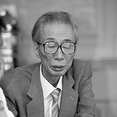
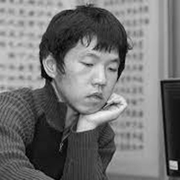
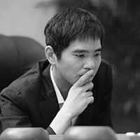

韓國棋院 (韓語：한국기원)是韓國職業圍棋的主要管理機構，其歷史演變簡要說明如下：
-
1945年
趙南哲創立「漢城棋院」，為韓國圍棋的發展奠定基礎
-
1960年
趙南哲正式創立「韓國棋院」
-
1956年
趙南哲創辦國手戰(Korean Go Championship)，將圍棋比賽推廣至民間，促進了圍棋在韓國的普及
韓國棋院自成立以來，致力於推動職業圍棋的發展，並在國際棋界中佔據了重要地位。
知名職業棋士

被譽為韓國圍棋的奠基人之一，他的創建和推廣工作對韓國職業圍棋的發展產生了深遠影響。
- 1937年：赴日本學習圍棋，拜著名棋士木谷實為師
- 1945年：創辦漢城棋院，韓國職業圍棋正式出現
- 1950年：在其組織下，韓國首次舉辦「現代圍棋定段比賽」，他被定為三段，其他棋士被定為初段
- 1955年：組織「職業棋士代表團」赴台灣參加國際對抗賽並取得勝利，顯著提升了圍棋在韓國的聲譽
- 1968年：漢城棋院重建並更名為「韓國棋院」，成為韓國職業圍棋的主要機構
- 1983年：被授予九段，成為圍棋界的頂尖棋士
- 1994年：打入國棋戰本賽，成為打入職業棋戰本賽時年齡最大的棋士
- 1995年：退休，專注於圍棋教育和推廣
被譽為韓國圍棋的代表性人物之一，他的成就對韓國圍棋的發展產生了深遠影響
- 1953年：出生於韓國，成為韓國圍棋界的重要人物
- 1970年：成為韓國棋院職業棋士，迅速崛起為頂尖棋士
- 1989年：在第一屆應氏杯世界圍棋錦標賽中奪冠，引發韓國圍棋熱潮
- 1990年：贏得第二屆應氏杯，進一步巩固了他在國際圍棋界的地位
- 2000年：在三星盃中獲得亞軍，持續在國際賽事中表現出色
- 2007年：正式退休，轉向圍棋教育和推廣工作

被譽為圍棋界的偉大棋士之一，他的策略性棋風和圍棋成就對圍棋界產生了深遠影響
- 1975年：出生於韓國，早期顯示出圍棋天賦
- 1988年：成為韓國棋院職業棋士，迅速崛起為頂尖棋士
- 1992年：贏得首屆圓桌棋賽，顯示出其卓越的棋藝
- 1996年：在三星盃中獲得冠軍，並連續多次獲得世界圍棋冠軍
- 2000年：在應氏杯世界圍棋錦標賽中奪冠，確立了其在國際棋界的地位
- 2006年：開始狀態有所下滑，面臨新興棋手的挑戰
- 2010年：積極參與圍棋教學和推廣，並繼續參加比賽

以其獨特的棋風和在人工智能圍棋比賽中的突破性勝利，成為圍棋界的傳奇人物之一
- 1995年：成為韓國棋院職業棋士，迅速崛起為頂尖棋士
- 2008年：在世界圍棋錦標賽中獲得冠軍，建立了國際圍棋界的聲譽
- 2010年：在三星盃中獲得冠軍，展示了其卓越的棋藝
- 2016年：在與人工智能AlphaGo的比賽中獲得一場勝利，引起了全球的關注
- 2019年：宣布退休，結束了其職業圍棋生涯